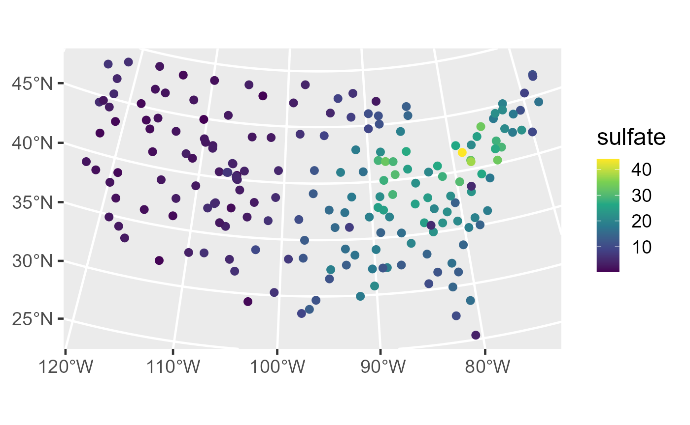
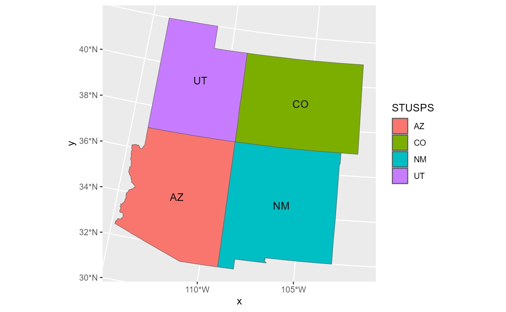
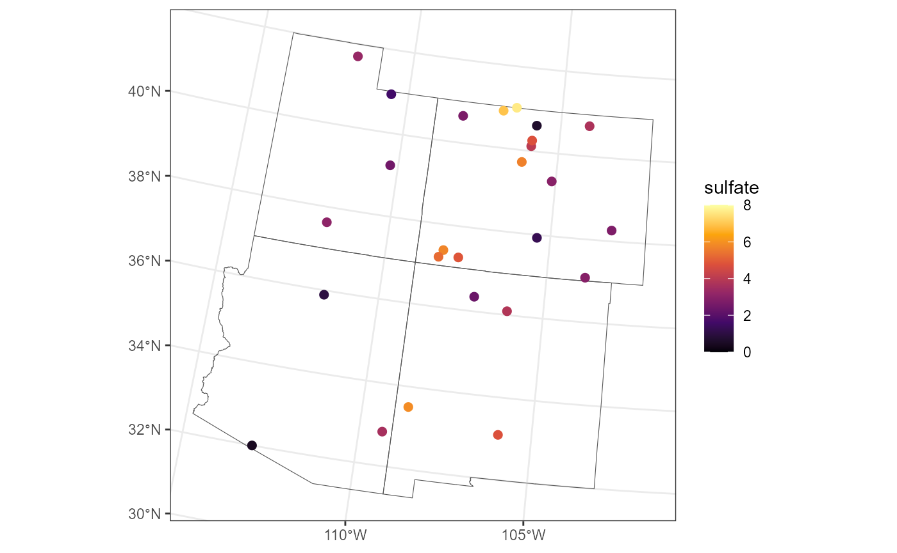
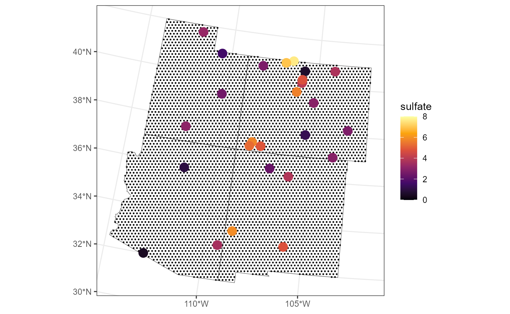
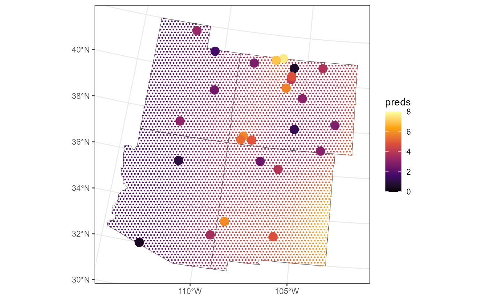
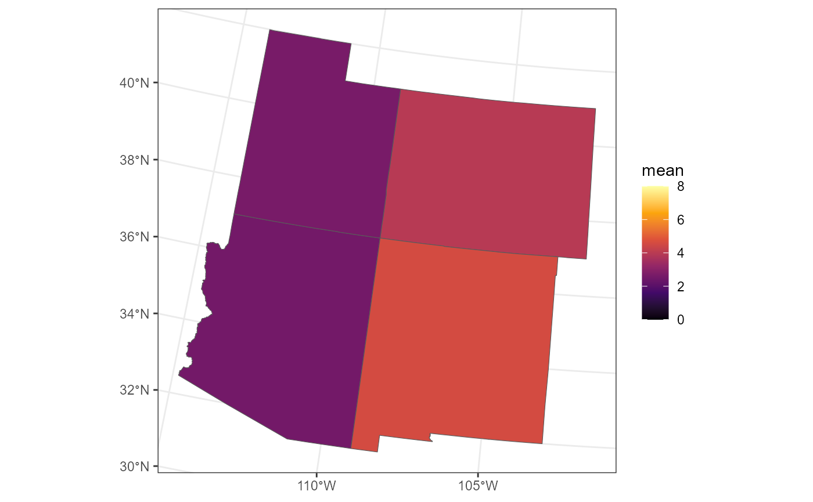

vignettes/articles/block.Rmd
block.Rmdspmodel is a package used to fit, summarize, and predict
for a variety of spatial statistical models. This vignette explores
tools for predicting the average value of a response variable in a
particular geographic region, an approach known as Block Prediction
(i.e., Block Kriging) (Cressie 1993; Ver Hoef
2008). Before proceeding, we load spmodel,
sf, and ggplot2 by running
If using spmodel in a formal publication or report,
please cite it. Citing spmodel lets us devote more
resources to the package in the future. We view the spmodel
citation by running
citation(package = "spmodel")#> To cite spmodel in publications use:
#>
#> Dumelle M, Higham M, Ver Hoef JM (2023). spmodel: Spatial statistical
#> modeling and prediction in R. PLOS ONE 18(3): e0282524.
#> https://doi.org/10.1371/journal.pone.0282524
#>
#> A BibTeX entry for LaTeX users is
#>
#> @Article{,
#> title = {{spmodel}: Spatial statistical modeling and prediction in {R}},
#> author = {Michael Dumelle and Matt Higham and Jay M. {Ver Hoef}},
#> journal = {PLOS ONE},
#> year = {2023},
#> volume = {18},
#> number = {3},
#> pages = {1--32},
#> doi = {10.1371/journal.pone.0282524},
#> url = {https://doi.org/10.1371/journal.pone.0282524},
#> }spmodel
The sulfate data is an sf object that
contains sulfate measurements in the conterminous United States (CONUS).
We first visualize the distribution of the sulfate data by running
ggplot(sulfate, aes(color = sulfate)) +
geom_sf(size = 2.5) +
scale_color_viridis_c() +
theme_gray(base_size = 18)
In the “Detailed Guide” vignette, we describe how to fit a spatial
linear model to the sulfate data and use it to predict sulfate
concentrations at the geographic locations in
sulfate_preds. But what if we want to predict the average
sulfate concentration in the entire CONUS? Or what if we want to predict
the average sulfate concentration in a single state like Colorado? Or a
region like the Four Corners region of CONUS? We can answer these
questions using Block Prediction (i.e., Block Kriging).
First, we fit a spatial linear model for sulfate using an intercept-only model with an exponential spatial covariance function by running
sulfmod <- splm(sulfate ~ 1, sulfate, spcov_type = "exponential")We can use this model to perform Block Prediction in any subregion of
CONUS. Consider the four corners region of CONUS, which is composed of
four states: Arizona (AZ), Colorado (CO), New Mexico (NM), and Utah
(UT). fc_borders is a simple features object with polygonal
geometry that contains the boundaries of these four states. We can
visualize the states in this region by running
ggplot(data = fc_borders, aes(fill = STUSPS, label = STUSPS)) +
geom_sf() +
geom_sf_text()
We subset the sulfate data to the observations from the Four Corners
region so that we can zoom in on their values. We implement a slight
jitter (random perturbation) of the coordinates to avoid overplotting
points that are very close to one another. Moreover, we use a different
color scale than for the full sulfate data so we can better
distinguish among the sulfate concentrations in the region:
sulfate_fc <- sulfate[fc_borders, ]
sulfate_fc <- st_jitter(sulfate_fc, factor = 0.04)
ggplot() +
geom_sf(data = fc_borders, fill = "transparent") +
geom_sf(data = sulfate_fc, aes(color = sulfate), size = 2) +
scale_color_viridis_c(option = "B", limits = c(0, 8)) +
theme_bw()
The sulfate concentrations in the western part of the Four Corners region (UT, AZ) appear lower than in the eastern part (CO, NM).
Recall that our goal is to predict the mean sulfate concentration in
the entire region. Block Prediction works (in practice) by first
generating a dense grid of prediction locations that cover the entire
geographic region of interest (here, the Four Corners with boundaries
given in fc_borders). We create this grid and turn the
dense grid (of 5,000 points) into an sf object by
running:
grid_size <- 5000
fc_grid <- st_sample(fc_borders, grid_size, type = "hexagonal")
fc_grid <- st_as_sf(fc_grid)Depending on the size of the spatial domain, consider increasing or decreasing the grid size. The larger the grid size, the more accurate the Block Prediction, though the returns diminish rapidly and add additional computational burden.
We visualize the spatial locations (small, black circles) on the grid with the observed sulfate concentrations overlain:
ggplot() +
geom_sf(data = fc_borders, fill = "transparent") +
geom_sf(data = fc_grid, size = 0.2) +
geom_sf(data = sulfate_fc, aes(color = sulfate), size = 4) +
scale_color_viridis_c(option = "B", limits = c(0, 8)) +
theme_bw()
Intuitively, Block Prediction works by making point predictions at
each point in the dense grid and then combining each prediction in a way
that respects the uncertainties associated with the fitted spatial
model. We obtain predictions at each point in the dense grid using the
sulfmod model that was fit to all of the sulfate data in
the conterminous United States by running
fc_grid$preds <- predict(sulfmod, newdata = fc_grid)We visualize these point predictions by running
ggplot() +
geom_sf(data = fc_borders, fill = "transparent") +
geom_sf(data = fc_grid, aes(color = preds), size = 0.2) +
geom_sf(data = sulfate_fc, aes(color = sulfate), size = 4) +
scale_color_viridis_c(option = "B", limits = c(0, 8)) +
theme_bw()
We can combine the point predictions via Block Prediction by adding a
block = TRUE argument to predict():
predict(sulfmod, newdata = fc_grid, block = TRUE)#> [1] 3.487391Just like with predict.splm(), we can obtain appropriate
prediction uncertainty using the interval argument:
predict(sulfmod, newdata = fc_grid, block = TRUE, interval = "prediction")#> fit lwr upr
#> 1 3.487391 2.062777 4.912005Now suppose that we wanted to predict average sulfate concentrations in Colorado. First, we subset the Four Corners region to Colorado:
co_borders <- fc_borders[fc_borders$STUSPS == "CO", ]Then, we subset the dense grid to Colordao:
co_grid <- fc_grid[co_borders, ]Finally, we use Block Prediction:
predict(sulfmod, co_grid, block = TRUE, interval = "prediction")#> fit lwr upr
#> 1 3.954228 2.204428 5.704028Alternatively, one could create a new grid for Colordao rather than subsetting the Four Corners grid.
We write a helper function that returns the Block Prediction mean sulfate concentration for each of the four states (by subsetting the original grid):
return_state_mean <- function(state) {
state_borders <- fc_borders[fc_borders$STUSPS == state, ]
state_grid <- fc_grid[state_borders, ]
predict(sulfmod, state_grid, block = TRUE)
}
fc_borders$mean <- vapply(fc_borders$STUSPS, return_state_mean, numeric(1))We can visualize each Block Prediction of mean sulfate concentration:
ggplot() +
geom_sf(data = fc_borders, aes(fill = mean)) +
scale_fill_viridis_c(option = "B", limits = c(0, 8)) +
theme_bw()
A few details:
If the spatial model has explanatory variables, each element in the dense Block Prediction grid must have values of those explanatory variables. One way to accomplish this, for example, is to leverage a raster whose layers contain relevant explanatory variables.
There is a nuanced difference between Block Prediction and the fixed effect coefficients estimated by the model. Block Prediction predicts the realized mean, while the fixed effect coefficients are estimates of the underlying process mean. For more, see Dumelle et al. (2022).
Block Prediction is only available for point-referenced spatial
linear models (i.e., models fit via splm()). Block
Prediction is not available for areal data sets (e.g.,
spgautor()) or spatial generalized linear models (e.g.,
spglm(), spgautor()). Like
predict.splm(), predict.splm(block = TRUE) has
a local argument for large data sets. See
?predict.splm() for more.